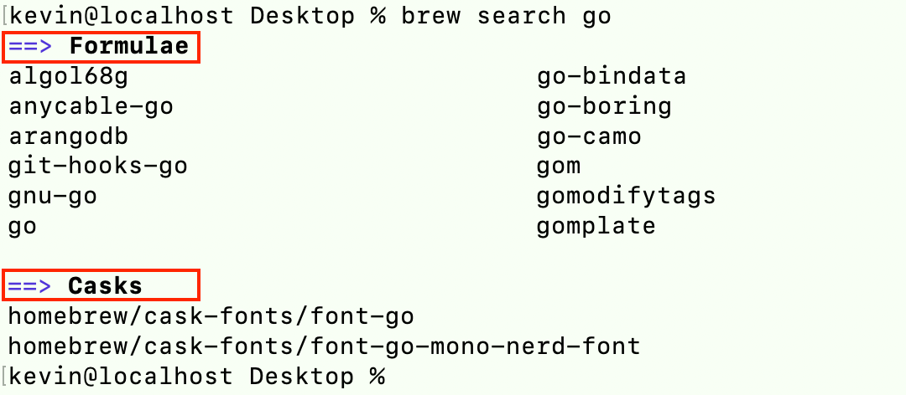

一、概述
- 1、Homebrew（简称brew）是macOS中的软件管理工具，可以方便地安装、更新、卸载软件，类似Ubuntu系统中的apt（apt-get）；
- 2、macOS默认安装了
Python、Ruby、Perl、PHP、Apache等开发程序，但是版本比较旧； 若直接使用新版本替换系统的旧版本，会引发一些问题，Homebrew可以很好地将其安装的开发工具与系统默认的隔离开来；
二、安装、卸载
-
1、在2020之前，brew是基于Ruby运行的工具，必须先安装Ruby；在终端中，执行以下指令（可在
https://brew.sh/页面中获取）即可自动安装，路径为/usr/local/Homebrew/，其中/usr/local/Homebrew/Library/是brew的自身目录；// 2020之前（使用Ruby） /usr/bin/ruby -e "$(curl -fsSL https://raw.githubusercontent.com/Homebrew/install/master/install)" // 2020开始（使用Shell） /bin/bash -c "$(curl -fsSL https://raw.githubusercontent.com/Homebrew/install/HEAD/install.sh)"- a. brew会创建
/usr/local/Cellar/（M1：/opt/homebrew/Cellar/）目录，用于存放通过其安装的程序，文件夹结构为“程序名/版本号”； - b.
/usr/local/bin/（M1：/opt/homebrew/bin/）目录是操作系统用来存放程序的软链接（相当于快捷方式）；brew也会在此，创建通过其安装的程序的软链接，这里可能会出现软链接冲突； - c. 通过brew安装的程序的配置文件，默认存放在
/usr/local/etc/（M1：/opt/homebrew/etc/）目录中；
- a. brew会创建
-
2、在终端中执行以下指令（可在
https://docs.brew.sh/FAQ.html页面中获取）即可自动卸载brew；// 2020之前（使用Ruby） /usr/bin/ruby -e "$(curl -fsSL https://raw.githubusercontent.com/Homebrew/install/master/uninstall)" // 2020开始（使用Shell） /bin/bash -c "$(curl -fsSL https://raw.githubusercontent.com/Homebrew/install/HEAD/uninstall.sh)"
三、brew常用命令
-
1、可以使用
brew doctor命令检测操作brew（安装、卸载程序等）后是否有什么问题；比如若报以下警告，则按照提示进行解决（之后再执行source .bash_profile）；
-
2、执行
brew install之后，要注意终端输出日志，从而采取进一步的操作；（caveats: 警告、附加说明）
brew -h | --help # 查看brew帮助（使用--时，命令要写全） brew -v | --version # 查看brew当前的版本 brew update # 更新brew brew list # 查看通过brew安装的程序 brew outdated # 查看哪些程序可以更新 brew search <NAME> # 搜索某个程序，例如brew search wget；NAME支持正则表达式，例如brew search /wge*/ brew install <NAME> # 安装某个程序，例如brew install wget brew uninstall | remove <NAME> # 卸载某个程序（不会卸载相关包依赖），例如brew uninstall wget brew upgrade [NAME] # 更新所有程序（或某个程序） brew info <NAME> # 查看某个程序的相关信息（如安装之后需要配置信息、安装所需要的依赖等） brew home [NAME] # 使用浏览器打开brew（或某个程序）的主页 brew deps <NAME> # 查看某个程序的包依赖 brew deps <NAME> --tree # 以树形结构，查看某个程序的包依赖 brew deps --installed --tree # 以树形结构，查看所有的包依赖 brew switch <NAME> <VERSION> # 切换版本 # 或者手动关联 brew unlink <NAME> brew link <NAME> -
3、对于通过Homebrew安装的services（如mysql等），可以使用
brew services相关命令进行管理；brew services list # 查看所有services的状态 brew services cleanup # 清除所有无用的services brew services run <NAME> # 启动某个services brew services start <NAME> # 启动某个services，并将设置开机自启动 brew services restart <NAME> # 重启某个services，并将设置开机自启动 brew services stop <NAME> # 关闭某个services，并将取消开机自启动 -
4、Homebrew安装软件时，先把软件放到
XX/Cellar/中，然后通过软链接（通过brew link命令实现），链接到/usr/local/bin；Homebrew对于每个软件的不同版本依赖，会单独下载安装；- 在执行
brew install或brew upgrade时，会自动执行brew link； brew unlink：删除到/usr/local/bin的软链接；- 通过
brew link、unlink可以实现切换工具的版本；
# 安装最新版本 go1.19.5 scott@localhost Desktop % brew install go scott@localhost Desktop % go version go version go1.19.5 darwin/arm64# 安装历史版本 go@1.18 scott@localhost Desktop % brew install go@1.18 ... ... ==> Caveats go@1.18 is keg-only, which means it was not symlinked into /opt/homebrew, because this is an alternate version of another formula. If you need to have go@1.18 first in your PATH, run: echo 'export PATH="/opt/homebrew/opt/go@1.18/bin:$PATH"' >> ~/.zshrc# 切换go的版本 scott@localhost Desktop % brew unlink go Unlinking /opt/homebrew/Cellar/go/1.19.5... 2 symlinks removed. scott@localhost % brew link go@1.18 Linking /opt/homebrew/Cellar/go@1.18/1.18.10... 2 symlinks created. If you need to have this software first in your PATH instead consider running: echo 'export PATH="/opt/homebrew/opt/go@1.18/bin:$PATH"' >> ~/.zshrc scott@localhost Desktop % go version go version go1.18.10 darwin/arm64- 参考：
- 在MacOS下通过brew link切换golang版本：
https://blog.csdn.net/weixin_45413603/article/details/125999543 - macos通过homebrew安装多版本node：
https://blog.csdn.net/Mint6/article/details/128509548
- 在MacOS下通过brew link切换golang版本：
- 在执行
四、Homebrew-cask
-
1、Homebrew-cask是Homebrew的一个扩展，用于安装图形界面程序（例如Chrome、QQMusic等），其命令为
brew cask ...； -
2、
brew用于安装不带界面的命令行工具，brew cask用于安装带界面的应用软件； -
3、Homebrew-cask有两个安装索引源，一个是稳定版本
https://github.com/phinze/homebrew-cask，一个是开发版本https://github.com/caskroom/homebrew-versions；安装了Homebrew，即可直接使用Homebrew-cask稳定版本的索引源； -
4、Homebrew-cask和Homebrew的搜索、安装、卸载、更新等操作是独立的；
brew cask list # 查看通过Homebrew-cask安装的程序 brew cask search <NAME> # 搜索某个程序，例如brew cask search qqmusic brew cask install <NAME> # 安装某个程序（路径为/Applications目录），例如brew cask install qqmusic brew cask uninstall | remove <NAME> # 卸载某个程序，例如brew cask uninstall qqmusic ····- 注意：Homebrew-cask没有提供
brew cask upgrade [NAME]的命令升级程序版本，只能重新安装程序；
- 注意：Homebrew-cask没有提供
-
5、⚠️从brew 2.6.0版本开始，
brew cask <command>命令被废弃，替代命令：brew <command> --cask；从brew 2.7.0版本开始，brew cask <command>命令被删除；Error: `brew cask` is no longer a `brew` command. Use `brew <command> --cask` instead.https://github.com/Homebrew/discussions/discussions/340https://brew.sh/2020/12/01/homebrew-2.6.0/https://brew.sh/2020/12/21/homebrew-2.7.0/
五、常用开发工具
5.1 MySQL
-
1、安装MySQL后，根据相关的信息配置MySQL；
brew install msysql
- 1）首先执行
mysql.server start或brew services start mysql启动MySQL（关闭使用stop命令），之后才可以连接数据库（mysql -uroot）；否则会报错：Can't connect to local MySQL server through socket '/tmp/mysql.sock' (2)； - 2）MySQL默认没有设置密码；若需要设置密码，执行
mysql_secure_installation，此时会提醒安装“VALIDATE PASSWORD PLUGIN”，选择NO，否则无法设置简单密码，之后按照后续提示进行操作即可； - 3）注意：若一些工具连接MySQL报2003错误，修改
/usr/local/Cellar/mysql/VERSION/homebrew.mxcl.mysql.plist中的ProgramArguments，添加<string>--bind-address=0.0.0.0</string>；（非brew安装的MySQL，修改/etc/my.cnf，添加[mysqld]换行bind-address=0.0.0.0）；- 参考：
https://stackoverflow.com/questions/43873367/error-2003-hy000-cant-connect-to-mysql-server-on-15-29-92-100-61
- 参考：
- 1）首先执行
-
2、MySQL的数据库文件默认存放在/usr/local/var/mysql/目录中，可执行SQL语句进行查看：
show global variables like "%datadir%";；当卸载时，若要完全删除MySQL，必须手动删除该数据库文件；
-
3、通过brew安装MySQL，卸载时通过brew卸载即可；若是手动安装，则需要手动卸载，命令如下：
sudo rm /usr/local/mysql sudo rm -rf /usr/local/mysql* sudo rm -rf /Library/StartupItems/MySQLCOM sudo rm -rf /Library/PreferencePanes/My* sudo rm -rf ~/Library/PreferencePanes/My* sudo rm -rf /Library/Receipts/mysql* sudo rm -rf /Library/Receipts/MySQL* sudo rm -rf /var/db/receipts/com.mysql.* vim /etc/hostconfig (and removed the line MYSQLCOM=-YES-) sudo rm -rf /usr/local/var/mysql # 删除数据库文件
5.2 Oracle Java
-
1、注意：使用Homebrew-cask进行安装（可以执行
brew search java命令查询安装源是Homebrew，还是Homebrew-cask）；brew cask install java # 安装Oracle Java brew cask uninstall java # 卸载Oracle Java -
2、若之前手动安装过Oracle Java，需要先进行手动卸载，相关命令如下：
sudo rm -rf /Library/Java sudo rm -rf /Library/Internet\ Plug-Ins/JavaAppletPlugin.plugin sudo rm -rf /Library/PreferencePanes/JavaControlPanel.prefPane sudo rm -rf /Library/LaunchAgents/com.oracle.java.Java-Updater.plist sudo rm -rf /Library/LaunchDaemons/com.oracle.java.JavaUpdateHelper.plist sudo rm -rf /Library/Preferences/com.oracle.java.Helper-Tool.plist sudo rm -rf /Library/PrivilegedHelperTools/com.oracle.java.JavaUpdateHelper sudo rm /var/db/receipts/com.oracle.* ... -
3、Shell命令补充：查找匹配、删除文件
# 全盘查找带“编程”的目录（d）、普通文件（f）、链接文件（l）等文件 find / -name "*编程*" # 全盘查找带“编程”或“IT”的目录（d）、普通文件（f）、链接文件（l）等文件 find / -name "*编程*" -o -name "*IT*" # 在当前目录及其子目录，查找带“编程”的普通文件 find . -name "*编程*" -type f # -iname: 不区分大小写查找 find / -iname "*Abc*" # 在当前目录及其子目录，查找带“编程”的普通文件，并删除（不带打印） find . -name "*编程*" -type f | xargs rm -rf # 只在当前目录，查找带“编程”的普通文件（不递归查找） find . -name "*编程*" -type f -maxdepth 1
5.3 Tomcat
-
1、Tomcat后运行服务后，默认网址为
http://localhost:8080/；brew install tomcat # 安装tomcat catalina run # 在当前窗口中运行tomcat catalina start # 运行tomcat catalina stop # 关闭tomcat
六、管理工具
6.1 Cakebrew
-
1、Cakebrew是一个图形化的Homebrew，通过该工具可以不使用brew命令就可以进行Homebrew的管理（
https://www.cakebrew.com/）；
6.2 LaunchRocket（已废弃）
-
1、LaunchRocket可以管理通过Homebrew安装的Service，查看Service的运行状态（
https://github.com/jimbojsb/launchrocket）； -
2、注意：先将service关闭后，再通过LaunchRocket进行管理；

七、变更镜像站（加速安装）
-
1、Homebrew主要分为两部分：git repo（位于GitHub）和二进制bottles；
-
2、替换为阿里云镜像站：
# 1、更换brew.git cd "$(brew --repo)" git remote set-url origin https://mirrors.aliyun.com/homebrew/brew.git # 2、更换homebrew-core.git cd "$(brew --repo)/Library/Taps/homebrew/homebrew-core" git remote set-url origin https://mirrors.aliyun.com/homebrew/homebrew-core.git # 3、进行更新 brew update // 通过brew config，可以查看配置信息 # 4、更换homebrew-bottles echo $SHELL // 查看Shell类型 a. 若是zsh，则 echo 'export HOMEBREW_BOTTLE_DOMAIN=https://mirrors.aliyun.com/homebrew/homebrew-bottles' >> ~/.zshrc source ~/.zshrc // 重新加载配置文件 b. 若是bash，则 echo 'export HOMEBREW_BOTTLE_DOMAIN=https://mirrors.aliyun.com/homebrew/homebrew-bottles' >> ~/.bash_profile source ~/.bash_profile // 重新加载配置文件 -
3、重置为官方镜像站：
# 1、重置brew.git cd "$(brew --repo)" git remote set-url origin https://github.com/Homebrew/brew # 2、重置homebrew-core.git cd "$(brew --repo)/Library/Taps/homebrew/homebrew-core" git remote set-url origin https://github.com/Homebrew/homebrew-core # 3、重置homebrew-bottles 删除~/.zsh或~/.bash_profile文件中的以下内容 export HOMEBREW_BOTTLE_DOMAIN=https://mirrors.aliyun.com/homebrew/homebrew-bottles source ~/.zshrc OR ~/.bash_profile -
4、参考：
- Homebrew 更换阿里云镜像源或还原官方镜像站：
https://blog.csdn.net/qq_41664096/article/details/108243129 - HomeBrew配置阿里云镜像：
https://www.cnblogs.com/sexintercourse/p/16656215.html
- Homebrew 更换阿里云镜像源或还原官方镜像站：
八、Homebrew相关术语
-
1、
Homebrew可以翻译成"家酿"，所以该软件是对酒相关的一个抽象，主要的结构包括：
-
1）
Formula（配方）- 表示使用Ruby文件描述的软件信息，包含软件基本信息、依赖、编译等； 如/
opt/homebrew/Library/Taps/homebrew/homebrew-core/Formula/mysql.rb； - 要安装历史版本，就是需要拿到历史版本的formula就可以安装了；
- 可以在
formulae.brew.sh/查找软件信息以及相关的formula历史版本（GitHub历史记录）；
- 表示使用Ruby文件描述的软件信息，包含软件基本信息、依赖、编译等； 如/
-
2）
Tap（酒吧）- 表示所有Formula或命令，对应的Git仓库；
- 如
/opt/homebrew/Library/Taps/homebrew/homebrew-core/对应https://github.com/Homebrew/homebrew-core仓库； brew update就是同步所有的Tap对应分支的更新；brew install XX-formula也是从所有Tap中查找XX-formula进行安装；
-
3）
Bottle（酒瓶）- 表示基于操作系统已编译好的二进制包，可以直接使用，省去自己编译；
-
4）
Cask（木酒桶）- 用于描述、安装macOS App软件；使用
brew install --cask安装，和使用DMG安装到Applications中的效果一样；
- 用于描述、安装macOS App软件；使用
-
5）
Cellar（酒窖）- 表示所有已安装软件的存储仓库路径，
/opt/homebrew/Cellar/；
- 表示所有已安装软件的存储仓库路径，
-
6）
Keg（小桶）- 表示一个已安装的软件版本路径，如
/opt/homebrew/Cellar/opencv/4.7.0_1/；
- 表示一个已安装的软件版本路径，如
-
-
2、参考：
- 使用brew安装历史版本的几种方式：
https://juejin.cn/post/7179202980191666233
- 使用brew安装历史版本的几种方式：
九、Apple M1的相关问题
-
1、当前安装的Homebrew是什么架构？
-
1）方法1：
which brewusr/local/bin/brew：x86架构；/opt/homebrew/bin/brew：arm64架构；
-
2）方法2：
brew configRosetta 2: true：x86架构；Rosetta 2: true：arm64架构；
-
-
2、在Apple M1上，如何安装x86架构的Homebrew？
- x86架构的Homebrew，无法在ARM环境下安装；需要有一个x86环境，解决方法有两种：
- 方法1：
终端 -》显示简介 -》使用Rosetta打开；之后，所有的终端会话中，运行的命令都运行在x86环境下； - 方法2：执行
arch -x86_64 $SHELL，之后，在当前终端会话中，运行的命令都运行在x86环境下；
-
3、Homebrew安装的包是什么架构？
- x86架构的Homebrew，安装的软件包是x86架构；
- arm64架构的Homebrew，安装的软件包是arm64架构；
-
4、在arm64的终端环境下，若安装了Rosetta2（
softwareupdate --install-rosetta），系统可以运行x86架构的软件包（系统会自动使用Rosetta2，进行转换）； -
5、应用的种类
终端 -》显示简介 -》通用 -》种类，有“应用程序（通用）”、“应用程序（Intel）”；- 若种类是“
应用程序（Intel）”，其只包含x86架构；系统会自动使用Rosetta2，所以没有“使用Rosetta打开”选项； - 若种类是“
应用程序（通用）”，其会包含x86架构和arm64架构，并且会使用arm64架构；若要让其使用x86架构运行（兼容一些插件等），需要勾选“使用Rosetta打开”选项；
-
6、参考
- 在 M1 芯片 Mac 上使用 Homebrew：
https://sspai.com/post/63935
- 在 M1 芯片 Mac 上使用 Homebrew：